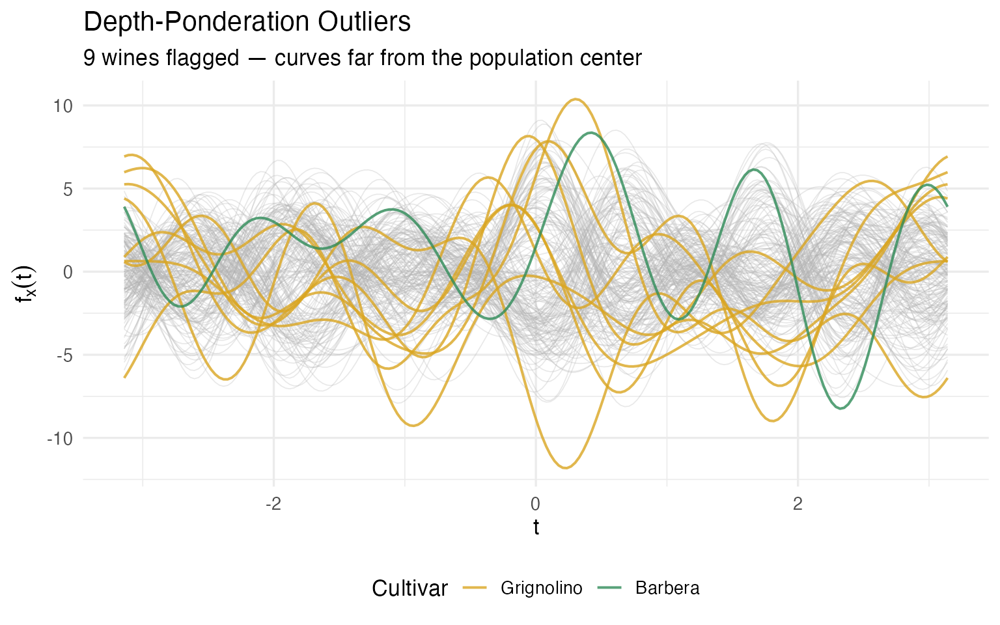
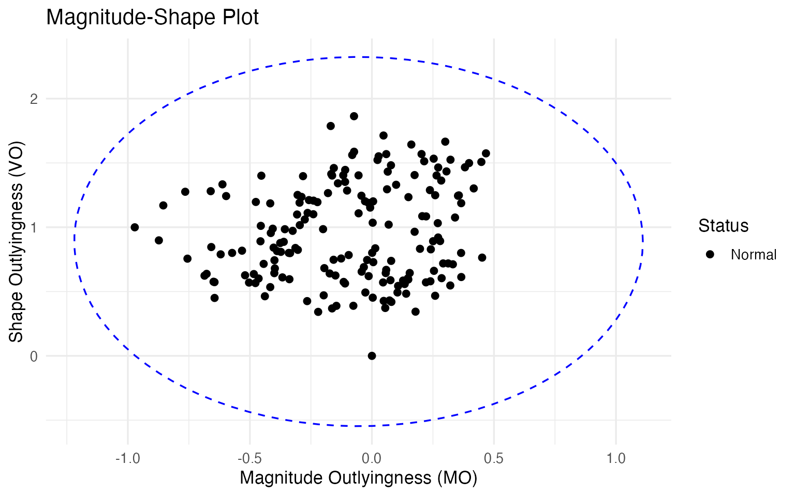
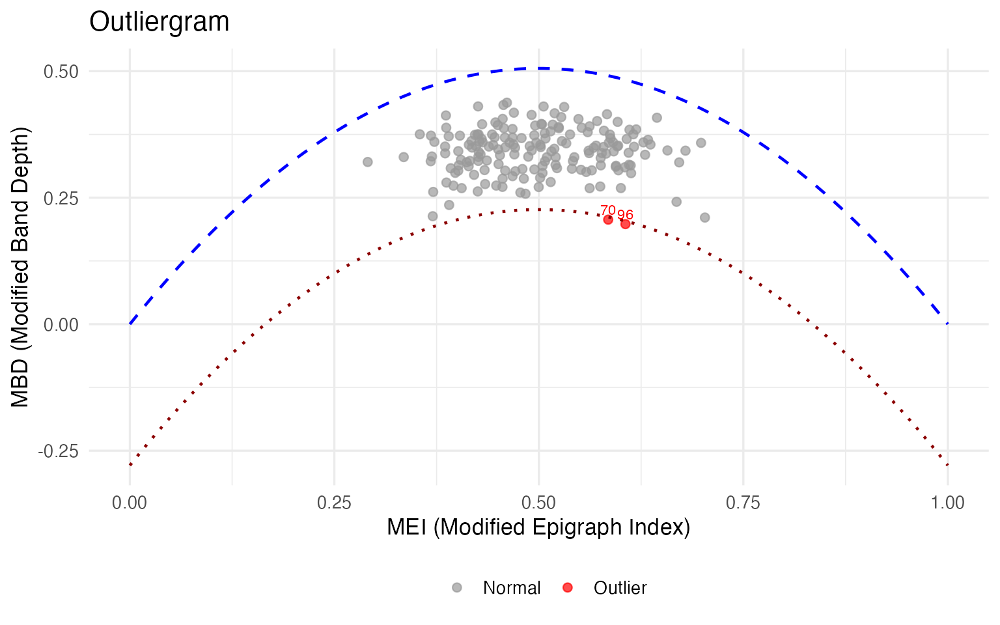
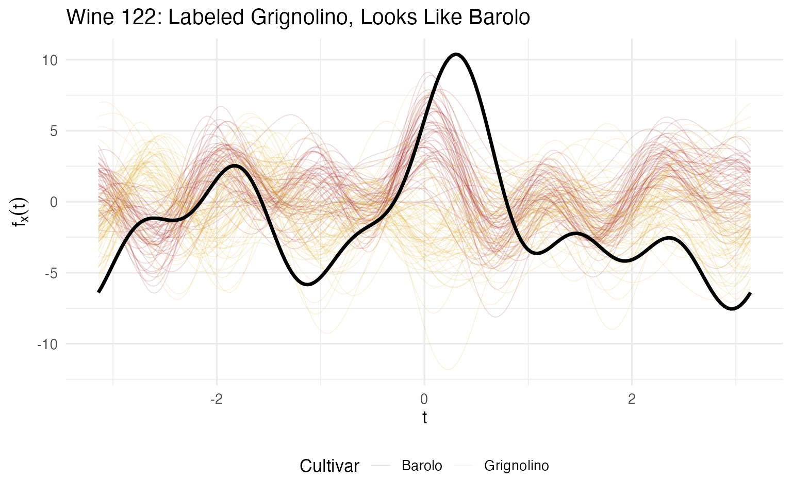
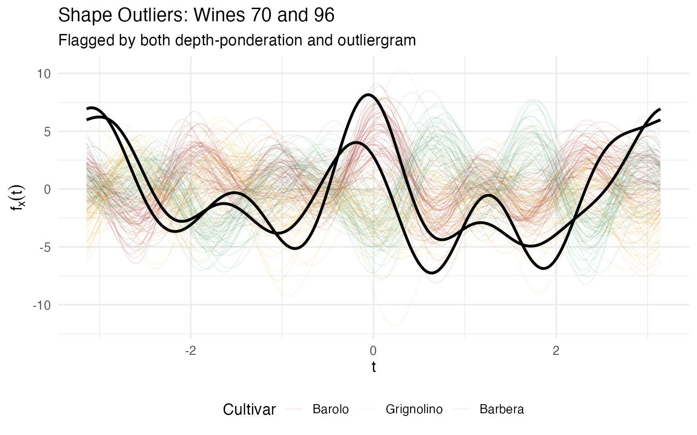
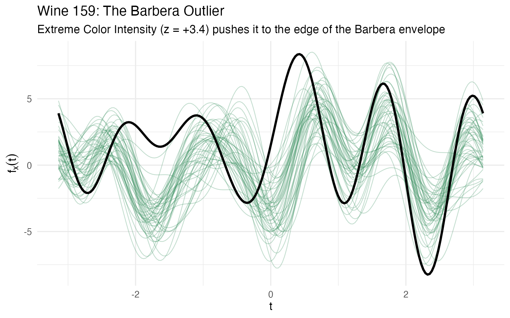

Andrews Wine: Outlier Detection
Source:vignettes/articles/example-andrews-wine.Rmd
example-andrews-wine.Rmd
library(fdars)
library(ggplot2)
library(dplyr)
library(patchwork)
library(knitr)
theme_set(theme_minimal(base_size = 13))
set.seed(42)This article applies three outlier detection methods to 178 wines transformed into Andrews curves. For background on why Andrews curves and how the transformation works, see Why Andrews Curves?.
| Article | What It Does | Outcome |
|---|---|---|
| Why Andrews Curves? | Transform 13 chemicals into curves; verify distance preservation | Each wine becomes a visual fingerprint; distances preserved exactly |
| Outlier Detection (this article) | Depth, outliergram, MS-plot | 9 anomalies classified by type — mislabel, soil anomaly, or concentration — with corrective actions |
| Clustering & Variable Importance | K-means, fuzzy c-means, permutation test, FPCA | Cultivar recovery at 96% accuracy; top 5 chemicals identified for cost reduction |
| Quality Control | Functional boxplots, depth rankings, tolerance bands | Monitoring system that checks new batches against a validated specification in one chart |
# Load wine data
wine_url <- "https://archive.ics.uci.edu/ml/machine-learning-databases/wine/wine.data"
col_names <- c("Cultivar", "Alcohol", "MalicAcid", "Ash", "Alkalinity",
"Magnesium", "Phenols", "Flavanoids", "NonflavPhenols",
"Proanthocyanins", "ColorIntensity", "Hue",
"OD280_OD315", "Proline")
wine <- read.csv(wine_url, header = FALSE, col.names = col_names)
cultivar <- factor(wine$Cultivar, levels = 1:3,
labels = c("Barolo", "Grignolino", "Barbera"))
X <- scale(as.matrix(wine[, -1]))
chem_names <- colnames(wine)[-1]
# Andrews transform
fd_wine <- andrews_transform(X)
n <- nrow(fd_wine$data)
m <- ncol(fd_wine$data)
t_grid <- fd_wine$argvals
df_curves <- data.frame(
t = rep(t_grid, n),
value = as.vector(t(fd_wine$data)),
curve = rep(1:n, each = m),
Cultivar = rep(cultivar, each = m)
)Finding the Unusual Wines
In wine production, “unusual” can mean a quality problem, a labeling error, or outright fraud. A standard approach might flag individual chemicals that fall outside a reference range — but that misses wines whose combination of values is strange, even when no single measurement is extreme. Because Andrews curves encode all 13 chemicals simultaneously, outlier detection on curves catches multivariate anomalies that univariate checks miss.
We apply three complementary methods. Each asks a different question about “unusualness,” and each gives the quality controller a different kind of actionable insight.
Method 1: Depth-Ponderation — “How far from the crowd?”
Think of depth as the opposite of outlyingness. The most
“typical” wine — the one whose chemical profile sits squarely in the
middle of the population — has the highest depth. Wines at the fringes
have low depth. The depth-ponderation method
(outliers.depth.pond()) stabilizes this measurement using
bootstrap resampling: it repeatedly draws random
subsets of the 178 wines, computes depth each time, and averages the
results. This smoothing prevents a single unlucky sample from distorting
the picture. Wines whose averaged depth falls below a threshold are
flagged.
set.seed(123)
out_pond <- outliers.depth.pond(fd_wine, nb = 500)
cat("Depth-ponderation outliers:", sort(out_pond$outliers), "\n")
#> Depth-ponderation outliers: 60 70 74 79 96 97 111 122 159
cat("Cultivars:", as.character(cultivar[out_pond$outliers]), "\n")
#> Cultivars: Grignolino Grignolino Grignolino Grignolino Grignolino Grignolino Grignolino Grignolino Barbera
is_pond_outlier <- rep(FALSE, n)
is_pond_outlier[out_pond$outliers] <- TRUE
ggplot() +
geom_line(data = filter(df_curves, !rep(is_pond_outlier, each = m)),
aes(x = t, y = value, group = curve),
color = "gray70", alpha = 0.3, linewidth = 0.3) +
geom_line(data = filter(df_curves, rep(is_pond_outlier, each = m)),
aes(x = t, y = value, group = curve, color = Cultivar),
linewidth = 0.7, alpha = 0.8) +
scale_color_manual(values = c("Barolo" = "#8B0000", "Grignolino" = "#DAA520",
"Barbera" = "#2E8B57")) +
labs(title = "Depth-Ponderation Outliers",
subtitle = sprintf("%d wines flagged — curves far from the population center",
length(out_pond$outliers)),
x = expression(t), y = expression(f[x](t))) +
theme(legend.position = "bottom")
What makes these wines unusual? Let’s look at which chemicals push them to the fringes:
# For each flagged wine, identify chemicals with |z-score| > 2
extreme_list <- lapply(sort(out_pond$outliers), function(i) {
extreme_idx <- which(abs(X[i, ]) > 2)
if (length(extreme_idx) > 0) {
chems <- paste(sprintf("%s (z=%.1f)", colnames(wine)[-1][extreme_idx],
X[i, extreme_idx]), collapse = ", ")
} else {
chems <- "no individual extreme — unusual *combination*"
}
data.frame(Wine = i, Cultivar = as.character(cultivar[i]),
`Extreme Chemicals` = chems, check.names = FALSE)
})
kable(bind_rows(extreme_list),
caption = "What makes each depth-ponderation outlier unusual (|z| > 2)")| Wine | Cultivar | Extreme Chemicals |
|---|---|---|
| 60 | Grignolino | Ash (z=-3.7), Alkalinity (z=-2.7), Proanthocyanins (z=-2.0) |
| 70 | Grignolino | Ash (z=-2.2), Magnesium (z=3.6) |
| 74 | Grignolino | Alkalinity (z=3.1), Magnesium (z=2.7) |
| 79 | Grignolino | Magnesium (z=2.5), Proanthocyanins (z=2.0) |
| 96 | Grignolino | Magnesium (z=4.4), Proanthocyanins (z=3.0) |
| 97 | Grignolino | Magnesium (z=2.4) |
| 111 | Grignolino | Proanthocyanins (z=3.5) |
| 122 | Grignolino | Ash (z=3.1), Alkalinity (z=2.7), Flavanoids (z=3.1) |
| 159 | Barbera | ColorIntensity (z=3.4) |
Notice that several wines have no individual extreme value — they’re outliers because of an unusual combination of chemicals. This is exactly the kind of anomaly that a column-by-column check would miss.
Method 2: Magnitude-Shape Plot — “Unusual how?”
The depth-ponderation method tells you that a wine is
unusual, but not how. The magnitude-shape decomposition
(magnitudeshape()) splits outlyingness into two independent
components:
Magnitude outlyingness (MO) measures whether a wine’s curve is systematically shifted up or down relative to the median wine. In chemical terms: are all values consistently high or consistently low? A high MO suggests a global issue — perhaps a measurement calibration error, a different vintage mixed in, or dilution/concentration.
Variability outlyingness (VO) measures whether the shape of a wine’s curve deviates from the population’s typical shape, regardless of its overall level. In chemical terms: are the ratios between chemicals unusual? A high VO suggests a process anomaly — perhaps a fermentation gone wrong, soil contamination, or blending with a different cultivar.
The method plots every wine in this two-dimensional (MO, VO) space and draws a -based cutoff ellipse. Wines outside the ellipse are flagged.
ms <- magnitudeshape(fd_wine)
plot(ms)
With the default 99.3% cutoff, no wines are flagged here. This is informative, not disappointing — it tells us that the outliers found by depth-ponderation are not extreme in the magnitude-shape sense. They sit at the fringes of their cultivar group, but their chemical ratios are still within the normal range. For a quality controller, this is reassuring: these wines are unusual but not suspiciously unusual. If the MS-plot did flag a wine, that would be a stronger alarm — possibly indicating adulteration or a process failure that distorts the fundamental chemical fingerprint.
Method 3: Outliergram — “Unusual in rank structure?”
The outliergram (outliergram()) takes a different angle
entirely. It computes two rank-based statistics for each wine:
Modified Epigraph Index (MEI): what proportion of the time does this wine’s curve sit above other curves? A wine with MEI near 0.5 is average in its vertical position; a wine near 0 or 1 is persistently low or high.
Modified Band Depth (MBD): how often does this wine’s curve fall within the band formed by pairs of other curves? High MBD means the wine has a typical profile; low MBD means it tends to cross or escape the population envelope.
For a well-behaved population, MEI and MBD follow a tight parabolic relationship: wines that are vertically central (MEI ≈ 0.5) should also be deeply enclosed (high MBD). The outliergram flags wines that deviate from this expected relationship — wines whose MBD is lower than expected given their MEI. These are shape outliers: wines that weave in and out of the population bundle in an unusual way.
og <- outliergram(fd_wine)
plot(og)
if (length(og$outliers) > 0) {
cat("Outliergram outliers:", sort(og$outliers), "\n")
cat("Cultivars:", as.character(cultivar[og$outliers]), "\n")
for (i in sort(og$outliers)) {
extreme_idx <- which(abs(X[i, ]) > 2)
if (length(extreme_idx) > 0) {
cat(sprintf(" Wine %d: %s\n", i,
paste(sprintf("%s (z=%.1f)", colnames(wine)[-1][extreme_idx],
X[i, extreme_idx]), collapse = ", ")))
}
}
}
#> Outliergram outliers: 70 96
#> Cultivars: Grignolino Grignolino
#> Wine 70: Ash (z=-2.2), Magnesium (z=3.6)
#> Wine 96: Magnesium (z=4.4), Proanthocyanins (z=3.0)The outliergram flags the most severe shape anomalies — wines whose internal chemical relationships are unusual even though their overall levels may be plausible. For a quality controller, a shape outlier warrants a different investigation than a magnitude outlier: you wouldn’t re-calibrate the instrument; you’d investigate the vineyard, the fermentation, or the supply chain.
Cross-Referencing: The Confidence Triage
No single outlier detection method is perfect. Each trades off sensitivity against specificity, and each is blind to certain kinds of anomaly. The real power comes from cross-referencing: wines flagged by multiple methods are the highest-priority cases for investigation.
# Collect flags per observation
outlier_flags <- data.frame(
Wine = 1:n,
Cultivar = cultivar,
DepthPond = 1:n %in% out_pond$outliers,
MagnShape = 1:n %in% ms$outliers,
Outliergram = 1:n %in% og$outliers
)
outlier_flags$n_methods <- rowSums(outlier_flags[, 3:5])
# Show wines flagged by at least one method
flagged <- outlier_flags |> filter(n_methods >= 1) |> arrange(desc(n_methods))
cat(nrow(flagged), "wines flagged by at least one method,",
sum(flagged$n_methods >= 2), "by two or more\n\n")
#> 9 wines flagged by at least one method, 2 by two or more
# Show flagged wines with their original chemical values
flagged_detail <- flagged |>
mutate(across(c(DepthPond, MagnShape, Outliergram),
~ ifelse(., "✓", ""))) |>
left_join(
data.frame(Wine = 1:n, round(wine[, -1], 1)),
by = "Wine"
)
kable(flagged_detail |> select(Wine, Cultivar, DepthPond, MagnShape,
Outliergram, n_methods,
Alcohol, Flavanoids, ColorIntensity, Proline),
caption = "Flagged wines with key chemical values")| Wine | Cultivar | DepthPond | MagnShape | Outliergram | n_methods | Alcohol | Flavanoids | ColorIntensity | Proline |
|---|---|---|---|---|---|---|---|---|---|
| 70 | Grignolino | ✓ | ✓ | 2 | 12.2 | 1.3 | 2.9 | 718 | |
| 96 | Grignolino | ✓ | ✓ | 2 | 12.5 | 2.3 | 2.6 | 937 | |
| 60 | Grignolino | ✓ | 1 | 12.4 | 0.6 | 2.0 | 520 | ||
| 74 | Grignolino | ✓ | 1 | 13.0 | 2.9 | 3.4 | 985 | ||
| 79 | Grignolino | ✓ | 1 | 12.3 | 1.9 | 3.4 | 750 | ||
| 97 | Grignolino | ✓ | 1 | 11.8 | 1.0 | 2.5 | 625 | ||
| 111 | Grignolino | ✓ | 1 | 11.5 | 2.6 | 2.9 | 562 | ||
| 122 | Grignolino | ✓ | 1 | 11.6 | 5.1 | 6.0 | 465 | ||
| 159 | Barbera | ✓ | 1 | 14.3 | 1.3 | 13.0 | 660 |
Deep Dive: The Grignolino Problem
Before we reach for generic conclusions, let’s look at the data. Eight of nine outliers are Grignolino — zero from Barolo, one from Barbera. That asymmetry is itself an important finding. Let’s understand what’s driving it.
fda_all_idx <- unique(c(out_pond$outliers, og$outliers, ms$outliers))
cat("Outliers by cultivar:\n")
#> Outliers by cultivar:
for (cv in levels(cultivar)) {
cv_n <- sum(cultivar == cv)
cv_out <- sum(cultivar[fda_all_idx] == cv)
cat(sprintf(" %s: %d outliers out of %d wines (%.0f%%)\n",
cv, cv_out, cv_n, 100 * cv_out / cv_n))
}
#> Barolo: 0 outliers out of 59 wines (0%)
#> Grignolino: 8 outliers out of 71 wines (11%)
#> Barbera: 1 outliers out of 48 wines (2%)Grignolino has by far the most variable chemical profile. Why? Let’s examine what the flagged wines have in common. For each outlier, we compute its deviation from its own cultivar mean (in within-cultivar standard deviations) — this tells us how unusual a wine is relative to its peer group, not just globally:
# Compute within-cultivar z-scores for each outlier
outlier_profiles <- lapply(sort(fda_all_idx), function(i) {
cv <- cultivar[i]
cv_idx <- which(cultivar == cv)
cv_mean <- colMeans(wine[cv_idx, -1])
cv_sd <- apply(wine[cv_idx, -1], 2, sd)
dev <- (as.numeric(wine[i, -1]) - cv_mean) / cv_sd
names(dev) <- chem_names
# Flag chemicals deviating > 1.5 within-cultivar SDs
extreme <- which(abs(dev) > 1.5)
data.frame(
Wine = i,
Cultivar = as.character(cv),
`Extreme Chemicals (> 1.5 cultivar SD)` =
if (length(extreme) > 0)
paste(sprintf("%s (%+.1f)", chem_names[extreme], dev[extreme]),
collapse = ", ")
else "none",
n_extreme = length(extreme),
check.names = FALSE
)
})
kable(bind_rows(outlier_profiles),
caption = "Each outlier's unusual chemicals, measured against its own cultivar")| Wine | Cultivar | Extreme Chemicals (> 1.5 cultivar SD) | n_extreme |
|---|---|---|---|
| 60 | Grignolino | Ash (-2.8), Alkalinity (-2.9), Flavanoids (-2.1), Proanthocyanins (-2.0), OD280_OD315 (-1.9) | 5 |
| 70 | Grignolino | Ash (-1.6), Magnesium (+3.4), NonflavPhenols (-1.8) | 3 |
| 74 | Grignolino | Alkalinity (+2.9), Magnesium (+2.7), Phenols (+1.9), Proline (+3.0) | 4 |
| 79 | Grignolino | Alkalinity (-1.6), Magnesium (+2.5), Proanthocyanins (+1.9) | 3 |
| 96 | Grignolino | Magnesium (+4.0), Proanthocyanins (+2.7), Proline (+2.7) | 3 |
| 97 | Grignolino | Ash (+1.6), Magnesium (+2.4), Flavanoids (-1.5), NonflavPhenols (-1.8) | 4 |
| 111 | Grignolino | Alcohol (-1.5), MalicAcid (+1.8), Phenols (+1.7), Proanthocyanins (+3.2), Hue (-1.5) | 5 |
| 122 | Grignolino | Ash (+3.1), Alkalinity (+2.5), Phenols (+1.7), Flavanoids (+4.2), ColorIntensity (+3.1), OD280_OD315 (+1.8) | 6 |
| 159 | Barbera | Alcohol (+2.2), MalicAcid (-1.5), Alkalinity (+1.6), Phenols (+3.1), Flavanoids (+1.8), Proanthocyanins (+3.8), ColorIntensity (+2.4) | 7 |
A pattern jumps out: Magnesium appears in almost every Grignolino outlier. These wines have Magnesium levels 2–4 standard deviations above the Grignolino mean. Typical Grignolino has 94.5 mg/L; these outliers range from 107 to 162 mg/L. Other recurring deviations include high Proanthocyanins and unusual Alkalinity.
This is exactly the kind of systemic insight that a per-variable range check would bury. Yes, a spreadsheet filter could flag “Magnesium > 130,” but it wouldn’t reveal that these high-Magnesium wines also tend to have unusual Proanthocyanins, or that they cluster together in the Fourier domain. The curve representation lets us see the compound pattern.
Case Study: Wine 122 — Mislabeled or Just Unusual?
Wine 122 is the most extreme outlier: it ranks dead last in depth among all 71 Grignolinos (rank 71/71). Let’s look at where it sits relative to all three cultivar groups:
# Distance from Wine 122 to each cultivar median
case_wine <- 122
dist_to_median <- sapply(levels(cultivar), function(cv) {
cv_idx <- which(cultivar == cv)
fd_cv <- fd_wine[cv_idx]
depths_cv <- depth.MBD(fd_cv)
median_global <- cv_idx[which.max(depths_cv)]
sqrt(sum((fd_wine$data[case_wine, ] - fd_wine$data[median_global, ])^2) *
diff(fd_wine$argvals[1:2]))
})
cat(sprintf("Wine %d (%s) — distance to each cultivar median:\n", case_wine,
cultivar[case_wine]))
#> Wine 122 (Grignolino) — distance to each cultivar median:
for (cv in names(dist_to_median)) {
marker <- ifelse(cv == as.character(cultivar[case_wine]), " <-- own cultivar", "")
cat(sprintf(" %s: %.2f%s\n", cv, dist_to_median[cv], marker))
}
#> Barolo: 10.67
#> Grignolino: 12.65 <-- own cultivar
#> Barbera: 13.24
closest <- names(which.min(dist_to_median))
cat(sprintf("\nClosest to: %s\n", closest))
#>
#> Closest to: Barolo
# Highlight Wine 122 against its claimed cultivar and the cultivar it resembles
is_case <- rep(FALSE, n)
is_case[case_wine] <- TRUE
ggplot() +
# Background: all curves, faded
geom_line(data = filter(df_curves, Cultivar %in% c("Barolo", "Grignolino") &
!rep(is_case, each = m)),
aes(x = t, y = value, group = curve, color = Cultivar),
alpha = 0.15, linewidth = 0.3) +
# Case wine: bold black
geom_line(data = filter(df_curves, rep(is_case, each = m)),
aes(x = t, y = value, group = curve),
color = "black", linewidth = 1.2) +
scale_color_manual(values = c("Barolo" = "#8B0000", "Grignolino" = "#DAA520")) +
labs(title = sprintf("Wine %d: Labeled Grignolino, Looks Like Barolo", case_wine),
x = expression(t), y = expression(f[x](t))) +
theme(legend.position = "bottom")
# Show its chemical profile vs both cultivar means
cv_means <- sapply(c("Grignolino", "Barolo"), function(cv) {
colMeans(wine[cultivar == cv, -1])
})
case_vals <- as.numeric(wine[case_wine, -1])
compare_122 <- data.frame(
Chemical = chem_names,
`Wine 122` = round(case_vals, 1),
`Grignolino Mean` = round(cv_means[, "Grignolino"], 1),
`Barolo Mean` = round(cv_means[, "Barolo"], 1),
`Closer To` = ifelse(
abs(case_vals - cv_means[, "Grignolino"]) < abs(case_vals - cv_means[, "Barolo"]),
"Grignolino", "Barolo"),
check.names = FALSE
)
kable(compare_122, caption = "Wine 122 vs cultivar means — closer to Barolo on most chemicals")| Chemical | Wine 122 | Grignolino Mean | Barolo Mean | Closer To | |
|---|---|---|---|---|---|
| Alcohol | Alcohol | 11.6 | 12.3 | 13.7 | Grignolino |
| MalicAcid | MalicAcid | 2.0 | 1.9 | 2.0 | Barolo |
| Ash | Ash | 3.2 | 2.2 | 2.5 | Barolo |
| Alkalinity | Alkalinity | 28.5 | 20.2 | 17.0 | Grignolino |
| Magnesium | Magnesium | 119.0 | 94.5 | 106.3 | Barolo |
| Phenols | Phenols | 3.2 | 2.3 | 2.8 | Barolo |
| Flavanoids | Flavanoids | 5.1 | 2.1 | 3.0 | Barolo |
| NonflavPhenols | NonflavPhenols | 0.5 | 0.4 | 0.3 | Grignolino |
| Proanthocyanins | Proanthocyanins | 1.9 | 1.6 | 1.9 | Barolo |
| ColorIntensity | ColorIntensity | 6.0 | 3.1 | 5.5 | Barolo |
| Hue | Hue | 0.9 | 1.1 | 1.1 | Grignolino |
| OD280_OD315 | OD280_OD315 | 3.7 | 2.8 | 3.2 | Barolo |
| Proline | Proline | 465.0 | 519.5 | 1115.7 | Grignolino |
Wine 122 is closer to the Barolo median than to its own Grignolino median. On 13 chemicals, it resembles Barolo on the majority. Its Flavanoids (5.1) are 3× the Grignolino average (2.1) but right at the Barolo average (2.98). Its Ash (3.2) and Alkalinity (28.5) are also Barolo-typical.
Quality controller’s action: this wine warrants a label audit. Either it was mislabeled during data collection, it comes from a vineyard on the Barolo-Grignolino boundary, or it was blended. The FDA analysis provides the evidence: it’s not just “unusual” — it’s unusual in the direction of a specific other cultivar. That’s a much more actionable finding than “Mahalanobis distance = 58.7.”
Case Study: Wines 70 and 96 — Shape Outliers Under the Microscope
These are the only wines flagged by both depth-ponderation and the outliergram. The outliergram specifically flags shape anomalies — wines whose curve crosses the population envelope in unexpected ways, even if their average level is unremarkable.
shape_cases <- c(70, 96)
# Their key chemistry
for (i in shape_cases) {
cat(sprintf("\n--- Wine %d (%s) ---\n", i, cultivar[i]))
cat(sprintf(" Magnesium: %.0f mg/L (Grignolino mean: 94.5, z = %+.1f)\n",
wine[i, "Magnesium"], X[i, "Magnesium"]))
cat(sprintf(" Proanthocyanins: %.1f (Grignolino mean: 1.6, z = %+.1f)\n",
wine[i, "Proanthocyanins"], X[i, "Proanthocyanins"]))
cat(sprintf(" Ash: %.1f g/L (Grignolino mean: 2.2, z = %+.1f)\n",
wine[i, "Ash"], X[i, "Ash"]))
# Fuzzy membership
fcm_all <- cluster.fcm(fd_wine, ncl = 3, seed = 123)
mem <- round(fcm_all$membership[i, ], 3)
cat(sprintf(" Fuzzy membership: [%.3f, %.3f, %.3f] — max = %.3f\n",
mem[1], mem[2], mem[3], max(mem)))
}
#>
#> --- Wine 70 (Grignolino) ---
#> Magnesium: 151 mg/L (Grignolino mean: 94.5, z = +3.6)
#> Proanthocyanins: 2.5 (Grignolino mean: 1.6, z = +1.6)
#> Ash: 1.8 g/L (Grignolino mean: 2.2, z = -2.2)
#> Fuzzy membership: [0.149, 0.445, 0.406] — max = 0.445
#>
#> --- Wine 96 (Grignolino) ---
#> Magnesium: 162 mg/L (Grignolino mean: 94.5, z = +4.4)
#> Proanthocyanins: 3.3 (Grignolino mean: 1.6, z = +3.0)
#> Ash: 2.2 g/L (Grignolino mean: 2.2, z = -0.6)
#> Fuzzy membership: [0.143, 0.312, 0.545] — max = 0.545
is_shape_case <- rep(FALSE, n)
is_shape_case[shape_cases] <- TRUE
ggplot() +
geom_line(data = filter(df_curves, !rep(is_shape_case, each = m)),
aes(x = t, y = value, group = curve, color = Cultivar),
alpha = 0.12, linewidth = 0.3) +
geom_line(data = filter(df_curves, rep(is_shape_case, each = m)),
aes(x = t, y = value, group = curve),
color = "black", linewidth = 1.1) +
scale_color_manual(values = c("Barolo" = "#8B0000", "Grignolino" = "#DAA520",
"Barbera" = "#2E8B57")) +
labs(title = "Shape Outliers: Wines 70 and 96",
subtitle = "Flagged by both depth-ponderation and outliergram",
x = expression(t), y = expression(f[x](t))) +
theme(legend.position = "bottom")
Both wines have extremely high Magnesium (151 and 162 mg/L vs a Grignolino average of 94.5). But they also deviate on different secondary chemicals — Wine 70 has very low Ash and NonflavPhenols, while Wine 96 has extreme Proanthocyanins (3.3, vs mean 1.6). What makes them shape outliers rather than mere magnitude outliers is that this combination of high and low values creates curves that cross the normal Grignolino band, dipping below it in some Fourier regions and rising above it in others.
Quality controller’s action: investigate the vineyard. Extreme Magnesium in an otherwise Grignolino-like wine suggests a soil chemistry anomaly — Magnesium uptake in grapes is strongly influenced by soil composition and rootstock. These wines may come from a plot with unusual mineral content. The shape anomaly means a simple recalibration won’t fix the issue; the underlying growing conditions need review.
Case Study: Wine 159 — The Lone Barbera Outlier
Wine 159 is the only Barbera flagged, and it’s an outlier for very different reasons than the Grignolinos:
i <- 159
cat(sprintf("Wine %d (%s)\n", i, cultivar[i]))
#> Wine 159 (Barbera)
cat(sprintf(" Color Intensity: %.1f (Barbera mean: 7.4, population z = %+.1f)\n",
wine[i, "ColorIntensity"], X[i, "ColorIntensity"]))
#> Color Intensity: 13.0 (Barbera mean: 7.4, population z = +3.4)
cat(sprintf(" Alcohol: %.1f%% (Barbera mean: 13.2%%, z = %+.1f)\n",
wine[i, "Alcohol"], X[i, "Alcohol"]))
#> Alcohol: 14.3% (Barbera mean: 13.2%, z = +1.6)
cat(sprintf(" Phenols: %.1f (Barbera mean: 1.7, z = %+.1f)\n",
wine[i, "Phenols"], X[i, "Phenols"]))
#> Phenols: 2.8 (Barbera mean: 1.7, z = +0.8)
cat(sprintf(" Proanthocyanins: %.1f (Barbera mean: 1.2, z = %+.1f)\n",
wine[i, "Proanthocyanins"], X[i, "Proanthocyanins"]))
#> Proanthocyanins: 2.7 (Barbera mean: 1.2, z = +1.9)
# Within-cultivar rank
cv_idx <- which(cultivar == "Barbera")
fd_cv <- fd_wine[cv_idx]
depths_cv <- depth.MBD(fd_cv)
pos_in_cv <- which(cv_idx == i)
rank_in_cv <- rank(-depths_cv)[pos_in_cv]
cat(sprintf("\n Depth rank within Barbera: %d / %d (dead last)\n",
rank_in_cv, length(cv_idx)))
#>
#> Depth rank within Barbera: 48 / 48 (dead last)
is_159 <- rep(FALSE, n)
is_159[159] <- TRUE
ggplot() +
geom_line(data = filter(df_curves, Cultivar == "Barbera" & !rep(is_159, each = m)),
aes(x = t, y = value, group = curve),
color = "#2E8B57", alpha = 0.3, linewidth = 0.4) +
geom_line(data = filter(df_curves, rep(is_159, each = m)),
aes(x = t, y = value, group = curve),
color = "black", linewidth = 1.2) +
labs(title = "Wine 159: The Barbera Outlier",
subtitle = "Extreme Color Intensity (z = +3.4) pushes it to the edge of the Barbera envelope",
x = expression(t), y = expression(f[x](t)))
Wine 159 has the highest Color Intensity in the entire dataset (13.0 vs a Barbera mean of 7.4). Its Phenols and Proanthocyanins are also well above the Barbera average. But the curve plot reveals something important: it follows the Barbera shape. The curve runs parallel to its cultivar mates, just with higher amplitude. This is a magnitude outlier — the overall chemical levels are elevated — not a shape outlier.
Quality controller’s action: re-test the Color Intensity measurement. A reading of 13.0 is almost double the cultivar mean, which could indicate either a genuinely concentrated wine (late harvest, low yield) or an analytical error. The Phenol and Proanthocyanin values corroborate the “concentrated” hypothesis — they’re consistently elevated, not randomly scattered. If re-testing confirms the values, this wine is likely a natural outlier from an unusually productive or concentrated lot, not a quality defect.
Summary: The Outlier Action Matrix
Putting it all together, here’s what the quality controller walks away with — not “these wines are unusual” (a spreadsheet could tell you that), but what kind of unusual, why, and what to do about it:
actions <- data.frame(
Wine = c(122, "70, 96", 159, "60, 74, 79, 97, 111"),
Type = c("Cultivar mismatch", "Shape outlier (soil/mineral)",
"Magnitude outlier (concentration)", "Peripheral Grignolino"),
`Key Finding` = c(
"Closer to Barolo median than Grignolino; 6 chemicals match Barolo profile",
"Extreme Magnesium (151–162 mg/L); curves cross the population envelope",
"Color Intensity 2× cultivar mean; all values elevated proportionally",
"Various extreme chemicals (Mg, Ash, Alkalinity); fringes of Grignolino cluster"
),
Action = c(
"Label audit — verify cultivar assignment; check vineyard of origin",
"Investigate soil chemistry and rootstock at source vineyard",
"Re-test Color Intensity; if confirmed, flag as concentrated lot",
"Review against cultivar specification; note in batch records"
),
check.names = FALSE
)
kable(actions, caption = "Outlier triage: from flag to action")| Wine | Type | Key Finding | Action |
|---|---|---|---|
| 122 | Cultivar mismatch | Closer to Barolo median than Grignolino; 6 chemicals match Barolo profile | Label audit — verify cultivar assignment; check vineyard of origin |
| 70, 96 | Shape outlier (soil/mineral) | Extreme Magnesium (151–162 mg/L); curves cross the population envelope | Investigate soil chemistry and rootstock at source vineyard |
| 159 | Magnitude outlier (concentration) | Color Intensity 2× cultivar mean; all values elevated proportionally | Re-test Color Intensity; if confirmed, flag as concentrated lot |
| 60, 74, 79, 97, 111 | Peripheral Grignolino | Various extreme chemicals (Mg, Ash, Alkalinity); fringes of Grignolino cluster | Review against cultivar specification; note in batch records |
This is the payoff of the functional approach. A classical Mahalanobis analysis would have flagged most of these same wines — but it would have given the quality controller a list of numbers with no indication of why each wine is unusual or what to do about it. The FDA pipeline delivers typed outliers (magnitude vs shape vs cultivar mismatch), visual diagnostics (the curve overlays above), and domain-specific action items. That’s the difference between a statistical report and a quality decision.
Comparison: What Would Standard Statistics Give You?
A classically trained analyst might reach for Mahalanobis distance — the standard multivariate outlier detector. It measures how far each wine is from the population mean, accounting for correlations between chemicals. Wines exceeding a critical value are flagged.
# Classical Mahalanobis distance outlier detection
mahal <- mahalanobis(X, colMeans(X), cov(X))
cutoff_chi <- qchisq(0.975, df = ncol(X))
mahal_outliers <- which(mahal > cutoff_chi)
cat(sprintf("Mahalanobis outliers (chi-sq cutoff = %.1f, df = %d):\n",
cutoff_chi, ncol(X)))
#> Mahalanobis outliers (chi-sq cutoff = 24.7, df = 13):
cat(" Flagged:", sort(mahal_outliers), "\n")
#> Flagged: 14 60 70 72 74 96 97 111 116 122 159 160
cat(" Count:", length(mahal_outliers), "\n")
#> Count: 12
# Compare with FDA results
fda_all <- unique(c(out_pond$outliers, og$outliers, ms$outliers))
overlap <- intersect(mahal_outliers, fda_all)
fda_only <- setdiff(fda_all, mahal_outliers)
mahal_only <- setdiff(mahal_outliers, fda_all)
cat("Overlap between methods:\n")
#> Overlap between methods:
cat(" Both flag: ", sort(overlap), "\n")
#> Both flag: 60 70 74 96 97 111 122 159
cat(" FDA only: ", sort(fda_only), "\n")
#> FDA only: 79
cat(" Mahalanobis only: ", sort(mahal_only), "\n")
#> Mahalanobis only: 14 72 116 160
# Show Mahalanobis distances for FDA-flagged wines
compare_df <- data.frame(
Wine = sort(union(mahal_outliers, fda_all)),
Cultivar = as.character(cultivar[sort(union(mahal_outliers, fda_all))])
)
compare_df$Mahal_Dist <- round(mahal[compare_df$Wine], 1)
compare_df$Mahal_Flag <- compare_df$Wine %in% mahal_outliers
compare_df$FDA_Flag <- compare_df$Wine %in% fda_all
compare_df$FDA_Methods <- sapply(compare_df$Wine, function(w) {
methods <- c()
if (w %in% out_pond$outliers) methods <- c(methods, "Depth")
if (w %in% og$outliers) methods <- c(methods, "Outliergram")
if (w %in% ms$outliers) methods <- c(methods, "MS-plot")
paste(methods, collapse = " + ")
})
kable(compare_df, caption = "Mahalanobis vs FDA: flagged wines compared")| Wine | Cultivar | Mahal_Dist | Mahal_Flag | FDA_Flag | FDA_Methods |
|---|---|---|---|---|---|
| 14 | Barolo | 25.0 | TRUE | FALSE | |
| 60 | Grignolino | 27.6 | TRUE | TRUE | Depth |
| 70 | Grignolino | 38.7 | TRUE | TRUE | Depth + Outliergram |
| 72 | Grignolino | 26.5 | TRUE | FALSE | |
| 74 | Grignolino | 38.0 | TRUE | TRUE | Depth |
| 79 | Grignolino | 24.2 | FALSE | TRUE | Depth |
| 96 | Grignolino | 38.2 | TRUE | TRUE | Depth + Outliergram |
| 97 | Grignolino | 25.2 | TRUE | TRUE | Depth |
| 111 | Grignolino | 35.2 | TRUE | TRUE | Depth |
| 116 | Grignolino | 26.9 | TRUE | FALSE | |
| 122 | Grignolino | 58.7 | TRUE | TRUE | Depth |
| 159 | Barbera | 36.5 | TRUE | TRUE | Depth |
| 160 | Barbera | 26.1 | TRUE | FALSE |
The overlap is substantial — as the distance preservation theorem predicts, both approaches are working with the same underlying Euclidean geometry. But notice the difference in what you get:
| Mahalanobis Distance | FDA Outlier Methods | |
|---|---|---|
| Output | One number per wine | Three diagnostic plots + typed flags |
| Tells you that | Yes | Yes |
| Tells you how | No — just “far from center” | Yes — magnitude vs shape vs rank structure |
| Visual diagnostic | None (abstract distance) | Overlay outlier curves on the population |
| Assumes | Multivariate normality | No distributional assumption |
| Multiple aspects | Single axis of outlyingness | Three complementary axes |
Mahalanobis distance is a fine screening tool, and in this dataset it largely agrees with the FDA methods. But when it flags Wine 122 with a distance of 58.7, it can’t tell you why — is every chemical extreme, or is the pattern unusual? The FDA approach answers that: depth-ponderation says the wine is far from the population center, the outliergram says the shape is unusual, and the magnitude-shape plot says the chemical ratios aren’t distorted. For a quality controller, that distinction means the difference between re-running the test (magnitude issue) and investigating the vineyard (shape issue).
What’s Next?
The other articles in this series:
Why Andrews Curves?: The starting point — why transform 13 chemicals into curves, and the distance preservation proof.
Clustering & Variable Importance: K-means, fuzzy c-means, FPCA, and permutation testing.
Quality Control: Functional boxplots, tolerance bands, and a three-phase monitoring workflow.
References
- Arribas-Gil, A. and Romo, J. (2014). Shape outlier detection and visualization for functional data: the outliergram. Biostatistics, 15(4), 603–619.
- Dai, W. and Genton, M.G. (2018). Multivariate functional data visualization and outlier detection. Journal of Computational and Graphical Statistics, 27(4), 923–934.